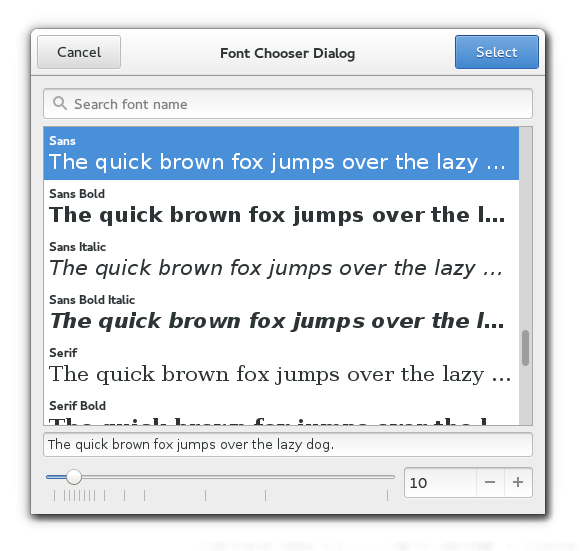

Gtk.FontChooserDialog¶
Example¶

- Subclasses:
None
Methods¶
- Inherited:
Gtk.Dialog (14), Gtk.Window (119), Gtk.Bin (1), Gtk.Container (35), Gtk.Widget (278), GObject.Object (37), Gtk.Buildable (10), Gtk.FontChooser (19)
- Structs:
Gtk.ContainerClass (5), Gtk.WidgetClass (12), GObject.ObjectClass (5)
class |
|
Virtual Methods¶
Properties¶
Style Properties¶
- Inherited:
Signals¶
Fields¶
- Inherited:
Gtk.Dialog (2), Gtk.Window (5), Gtk.Container (4), Gtk.Widget (69), GObject.Object (1), Gtk.FontChooser (1)
Name |
Type |
Access |
Description |
|---|---|---|---|
parent_instance |
r |
Class Details¶
- class Gtk.FontChooserDialog(*args, **kwargs)¶
- Bases:
- Abstract:
No
- Structure:
The
Gtk.FontChooserDialogwidget is a dialog for selecting a font. It implements theGtk.FontChooserinterface.The
Gtk.FontChooserDialogimplementation of theGtk.Buildableinterface exposes the buttons with the names “select_button” and “cancel_button”.New in version 3.2.
- classmethod new(title, parent)[source]¶
- Parameters:
- Returns:
a new
Gtk.FontChooserDialog- Return type:
Creates a new
Gtk.FontChooserDialog.New in version 3.2.